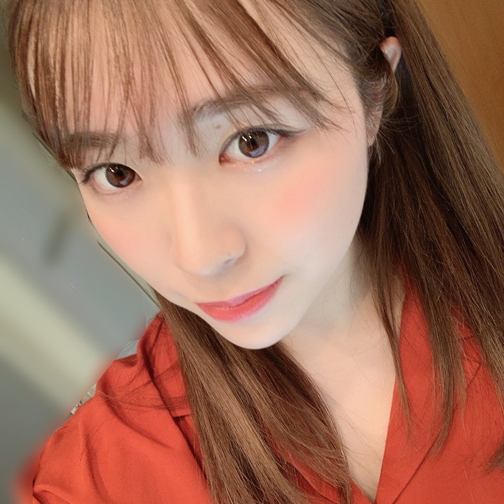
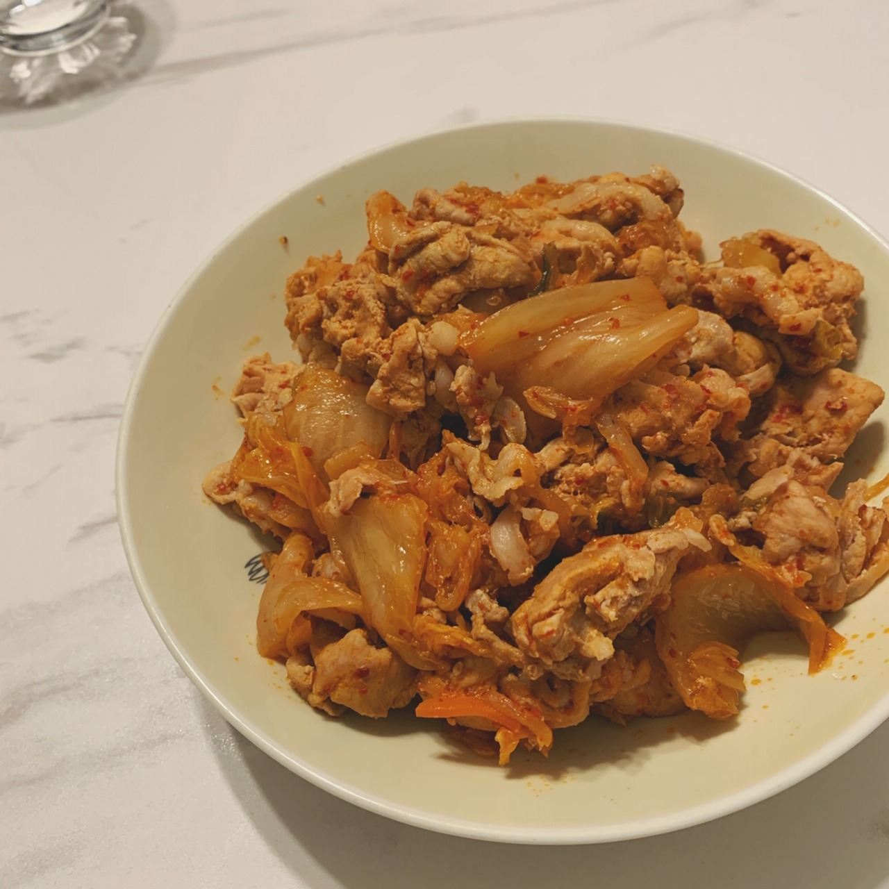
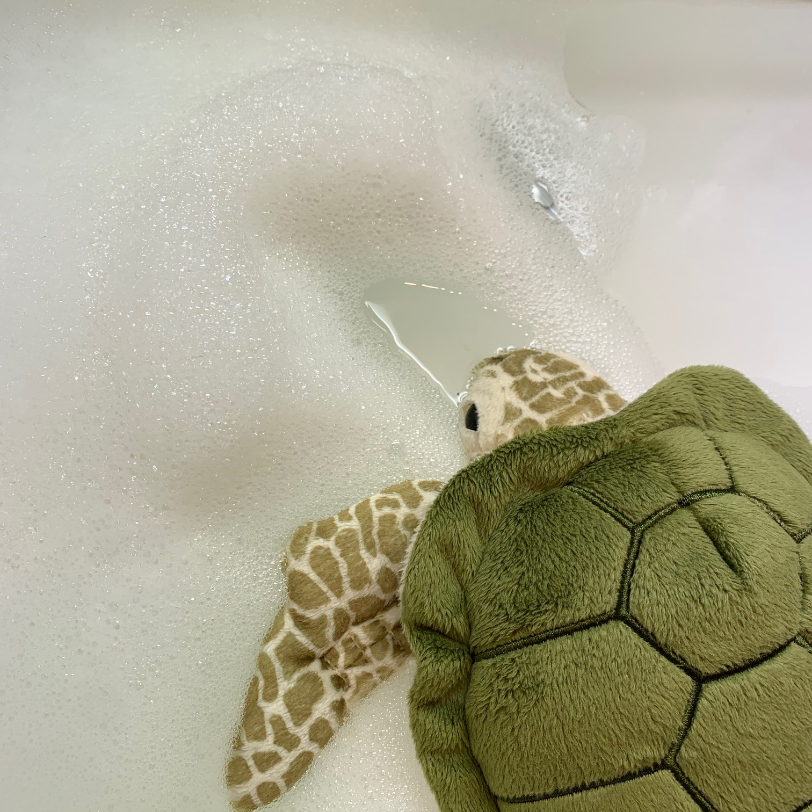
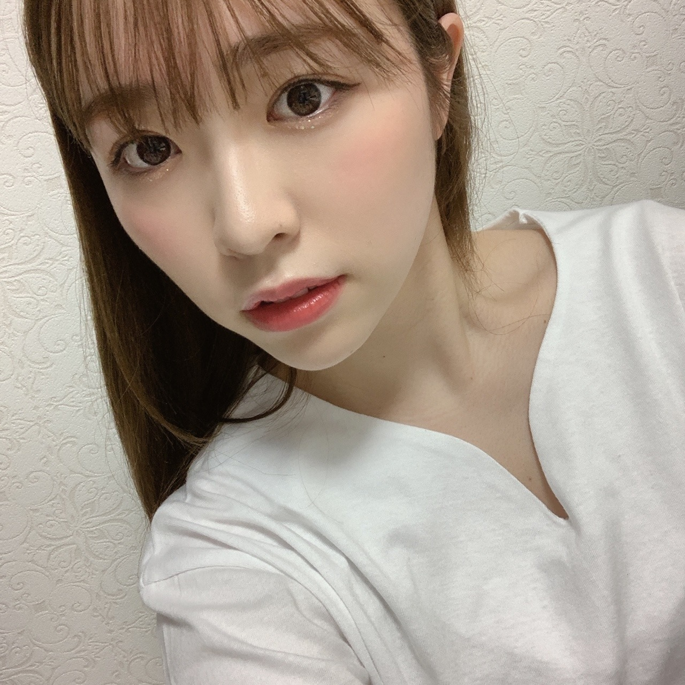
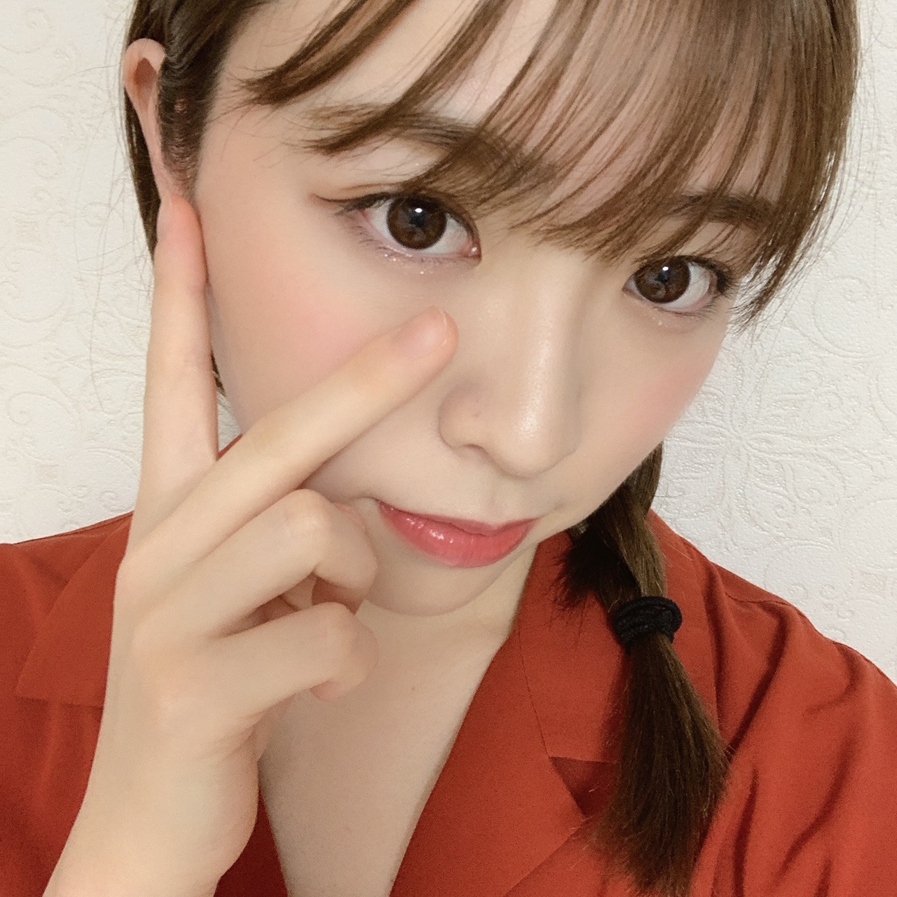
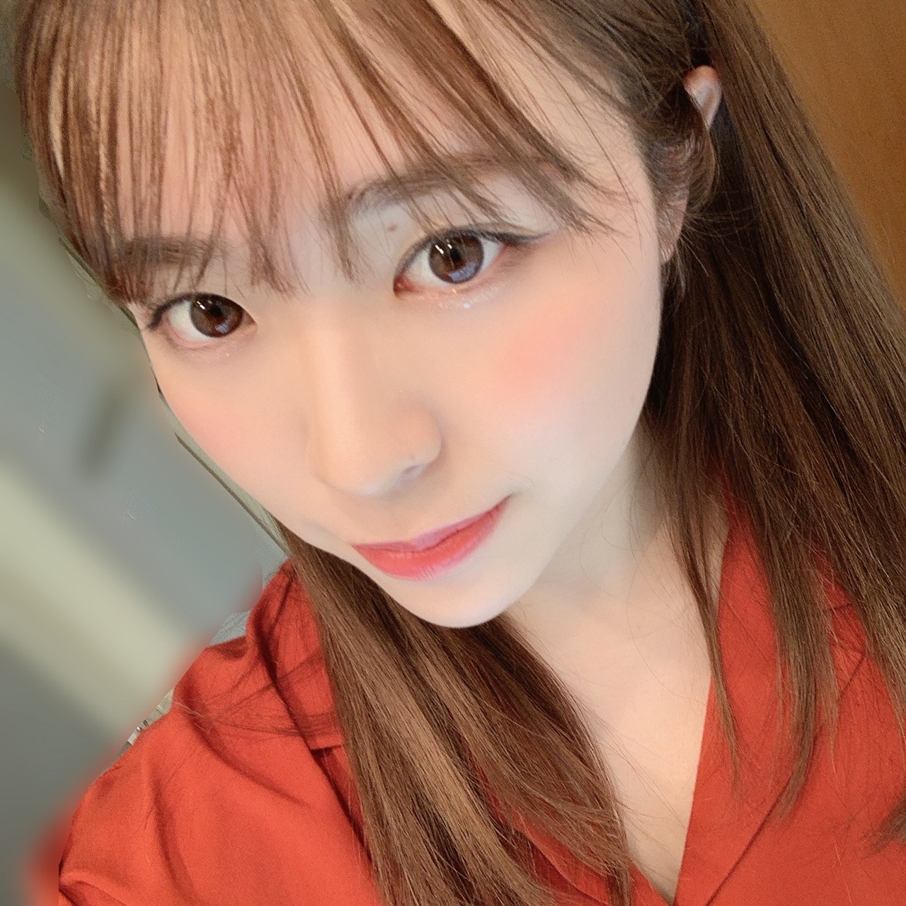
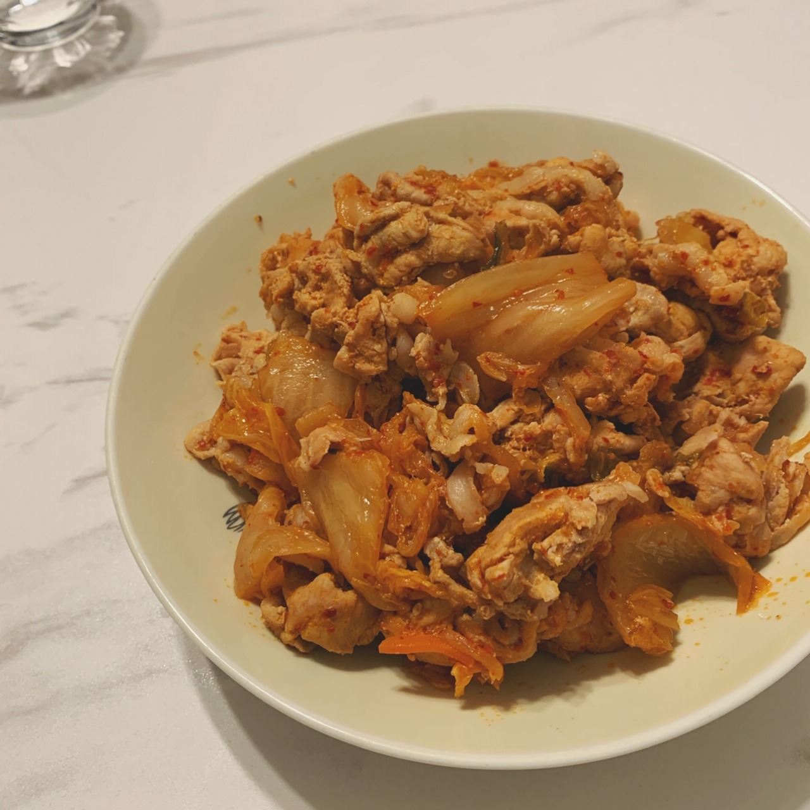
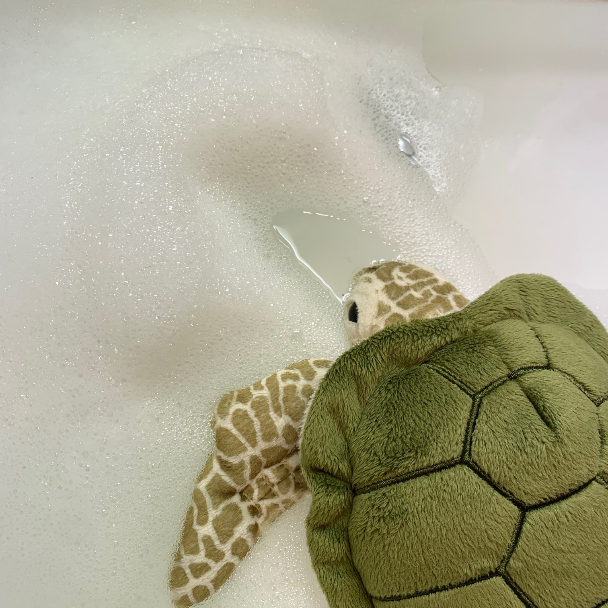
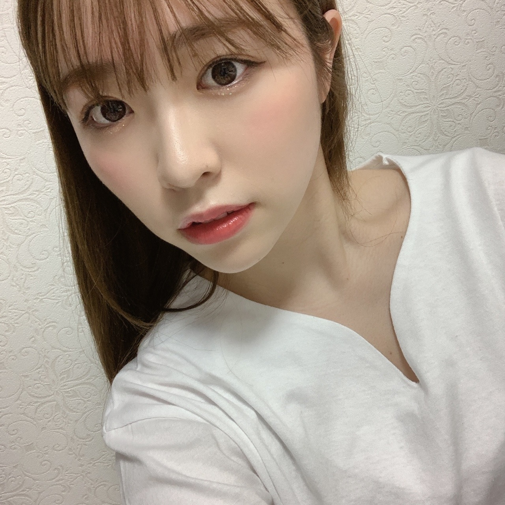
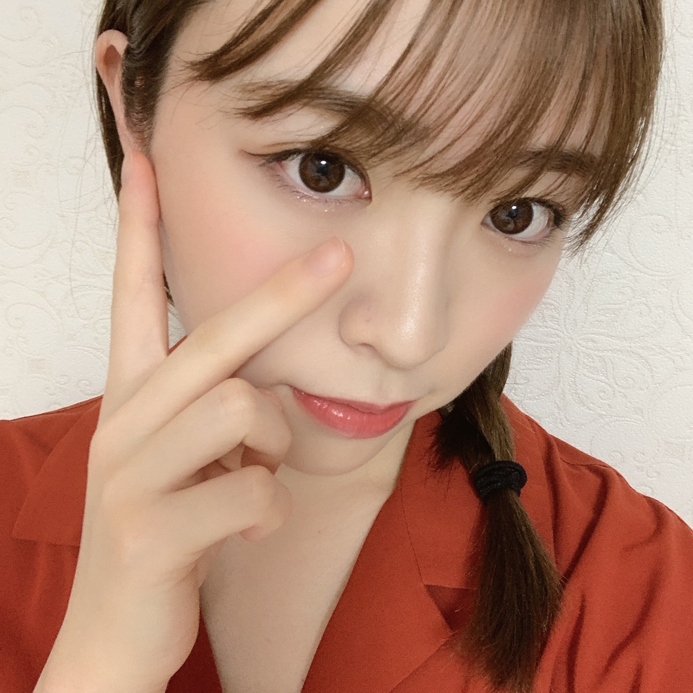

2020/0421Tue緑色の靴下
こんばんは

最近は家族に料理を振る舞っています。
美味しいと言ってくれる事がとても幸せです


日奈子から貰った私の大好きな
ウミガメのぬいぐるみ。
沖縄ロケの時私はロケチームで遊べず
ウミガメに会えないと嘆いていたら
夜、ロケが終わりホテルに帰ると
私のベッドの上に置いてありました。
日奈子ちゃん大好き愛してる
ある日はそんな思い入れの深いものたちの
洗濯をしました。
私は元々重度のインドアなので
インドア生活の素敵なライフを送っています。
あはは。


テレビを見ている時にずっと正座をしていたので
膝がとても痛いです。
そんな事してたら当たり前に痛いんだけど
テレビに夢中になっててついうっかり、、
みり愛
が前回2つになってましたね
余談でした、まあいいか。
みり愛
こんばんは

最近は家族に料理を振る舞っています。
美味しいと言ってくれる事がとても幸せです


日奈子から貰った私の大好きな
ウミガメのぬいぐるみ。
沖縄ロケの時私はロケチームで遊べず
ウミガメに会えないと嘆いていたら
夜、ロケが終わりホテルに帰ると
私のベッドの上に置いてありました。
日奈子ちゃん大好き愛してる
ある日はそんな思い入れの深いものたちの
洗濯をしました。
私は元々重度のインドアなので
インドア生活の素敵なライフを送っています。
あはは。


テレビを見ている時にずっと正座をしていたので
膝がとても痛いです。
そんな事してたら当たり前に痛いんだけど
テレビに夢中になっててついうっかり、、
みり愛
が前回2つになってましたね
余談でした、まあいいか。
みり愛
2020/04/21 20:00
コメント(439)
ブログありがとう
モバメでも料理の写真上げてくれてたけど、家庭的な一面がまたいいね
インドア生活に拍車が掛かってしまう昨今だけど、リズちゃん共々、健康に気をつけて過ごしてくださいねー

モバメでも料理の写真上げてくれてたけど、家庭的な一面がまたいいね
インドア生活に拍車が掛かってしまう昨今だけど、リズちゃん共々、健康に気をつけて過ごしてくださいねー
手短だけどモバメや755話通してコロナ期間だけど素敵な時間をみり愛が過ごせてるのを感じてます。会えないのは寂しいけど家族などと過ごされるゆったりできる貴重な時間を大切にね！
また元通りの生活が戻ったら元気いっぱいなみり愛ちゃんを見せてください！最近料理しまくって女に磨きがかかってるね！料理は上手くなって損はしないからどんどんうまくなってね！体に気をつけて！またね！
また元通りの生活が戻ったら元気いっぱいなみり愛ちゃんを見せてください！最近料理しまくって女に磨きがかかってるね！料理は上手くなって損はしないからどんどんうまくなってね！体に気をつけて！またね！
海亀泳いでるかわいいw
ブログありがとう！
最近みり愛ちゃんがモバメで料理の写真あげたり、一緒に作った！って言うの見ると食べたいなぁ...と言う気持ちに駆られます。ま、多分それはみり愛ちゃん推しの人みんな思ってると思うけどw
ひなこちゃん優しいね
その亀も可愛い！
なんだろうなー、最近テレビ見てる！とかのんびりしてる！って言うモバメ見るとあ、リズちゃんと一緒にいるのかな？と少し嫉妬します()嫉妬の権利です(?)
まだまだコロナが流行ってます。会える！っと思ってた日がどんどん遠くなるのが辛いけど次会えるときは思いを爆発させるからね！
みり愛ちゃん大好きです！
最近みり愛ちゃんがモバメで料理の写真あげたり、一緒に作った！って言うの見ると食べたいなぁ...と言う気持ちに駆られます。ま、多分それはみり愛ちゃん推しの人みんな思ってると思うけどw
ひなこちゃん優しいね
その亀も可愛い！
なんだろうなー、最近テレビ見てる！とかのんびりしてる！って言うモバメ見るとあ、リズちゃんと一緒にいるのかな？と少し嫉妬します()嫉妬の権利です(?)
まだまだコロナが流行ってます。会える！っと思ってた日がどんどん遠くなるのが辛いけど次会えるときは思いを爆発させるからね！
みり愛ちゃん大好きです！
僕も最近頑張って自炊してます。家にいる期間にうまくなってたらいいなー。
みり愛ちゃんも元気でね。
みり愛ちゃんも元気でね。
みり愛ちゃん
ブログ更新お疲れ様です。
握手会がなかなか出来ず寂しさが
つづきますが延期ばかりで残念ですが
早く顔がみたいですね。
くれぐれも体調に気をつけて頑張って下さい。
また、書きますね。
ブログ更新お疲れ様です。
握手会がなかなか出来ず寂しさが
つづきますが延期ばかりで残念ですが
早く顔がみたいですね。
くれぐれも体調に気をつけて頑張って下さい。
また、書きますね。
みりあ！(笑)
みり愛ちゃん！！ブログ更新ありがとう！
体調どうですかー？毎日気をつけてね！
みり愛ちゃんの料理美味しそう！！レパートリー増えたら教えてね！
体調どうですかー？毎日気をつけてね！
みり愛ちゃんの料理美味しそう！！レパートリー増えたら教えてね！
ブログ更新ありがとう！！
みり愛ちゃんのおうち時間充実してるみたいでよかった
私も水族館好きで前に行った時ウミガメのぬいぐるみ買っちゃった！
(完全にみり愛の影響w)
毎日みり愛ちゃんのこと考えて幸せに過ごせていることに感謝
みり愛も体調気をつけてすごしてね！
みり愛ちゃんのおうち時間充実してるみたいでよかった
私も水族館好きで前に行った時ウミガメのぬいぐるみ買っちゃった！
(完全にみり愛の影響w)
毎日みり愛ちゃんのこと考えて幸せに過ごせていることに感謝
みり愛も体調気をつけてすごしてね！
ブログありがとう！
みり愛ちゃんの料理を食べれる人生送りたかったです笑
正座はあるあるですねぇ笑
会える日を楽しみにしてるね！
みり愛ちゃんの料理を食べれる人生送りたかったです笑
正座はあるあるですねぇ笑
会える日を楽しみにしてるね！
みり愛ちゃんインドアなんだね(^-^)
僕もインドアどころか出不精です
いろいろ大変な時期だけど、みんなで力を合わせて頑張りましょうね！
豚キムチ美味しそう。また料理載せてね！
僕もインドアどころか出不精です
いろいろ大変な時期だけど、みんなで力を合わせて頑張りましょうね！
豚キムチ美味しそう。また料理載せてね！
こんばんは
これは豚キムチかな？ 美味しそう この写真だけでご飯いける ビールのおつまみにもいいな
海ガメのぬいぐるみが水辺にあるから一瞬本物に見えました(笑)
みり愛ちゃんも身体に気をつけてねぇ
これは豚キムチかな？ 美味しそう この写真だけでご飯いける ビールのおつまみにもいいな
海ガメのぬいぐるみが水辺にあるから一瞬本物に見えました(笑)
みり愛ちゃんも身体に気をつけてねぇ
久しぶりのコメントごめんね┏○ﾍﾟｺ
イベントが中止、延期になったりしてみり愛にいつ会えるのか分からない状況で、会える日を楽しみに握手会で話すことを考えたりしながら日々過ごしてます。早く会いたいです。
外出自粛で家にいる時間が長くなったので、普段見ない映画やアニメ、ドラマを見たり、本も5冊新たに買いました。家にいるからこそ出来ることをやるのもいいですね。夜更かし多くなると思っていたけど何故か早寝早起き、朝昼晩の3食をしっかり食べる健康的な生活を遅れてます。笑
料理いいですね、してみようかな
Q.挑戦してみたい料理ありますか？
外出る時は気をつけてね
おうち時間楽しんで下さい☺
(๑ •̀ω•́)۶ﾌｧｲﾄ!!
イベントが中止、延期になったりしてみり愛にいつ会えるのか分からない状況で、会える日を楽しみに握手会で話すことを考えたりしながら日々過ごしてます。早く会いたいです。
外出自粛で家にいる時間が長くなったので、普段見ない映画やアニメ、ドラマを見たり、本も5冊新たに買いました。家にいるからこそ出来ることをやるのもいいですね。夜更かし多くなると思っていたけど何故か早寝早起き、朝昼晩の3食をしっかり食べる健康的な生活を遅れてます。笑
料理いいですね、してみようかな
Q.挑戦してみたい料理ありますか？
外出る時は気をつけてね
おうち時間楽しんで下さい☺
(๑ •̀ω•́)۶ﾌｧｲﾄ!!
更新ありがとう！最近はバイト以外は家に籠って漫画読んだりYouTube観たりTwitter見たりしてます。大学も延期延期でかなり延びてしましました。多分夏休みが無くなります。残念です。こんなよ夜中だからライブや握手会などのイベントが開催されないのはしょうがないんですけどとても残念で悲しいし寂しいです。みんなが不要不急の外出をしない。マスクや、消毒をする。などを心がけて、早くコロナが収束し、いつかは必ず終息する事を願うばかりです。(収束と終息) 早く握手したいです。
ますますキレイになりましたね
みり愛お疲れ。。
さすがインドアマイスター。笑
じゃあね。
さすがインドアマイスター。笑
じゃあね。
緑色なら巾着袋だよね笑ミリヤはかわいい ❤️
ブログ更新ありがとー！
僕もインドアなので最近はずっと家にいます。
これが今の状況だと最善策だと思うので。
料理すごく美味しそうだね！
握手会やライブ等で逢える日が来るのを切実に今は待ちます。
では！！
僕もインドアなので最近はずっと家にいます。
これが今の状況だと最善策だと思うので。
料理すごく美味しそうだね！
握手会やライブ等で逢える日が来るのを切実に今は待ちます。
では！！
みり愛ちゃんブログ更新ありがとう！！
私も色んなご飯作れるようになりたい！！頑張らないと！
モバメもいつもありがとう！！！
私も色んなご飯作れるようになりたい！！頑張らないと！
モバメもいつもありがとう！！！
みり愛ーーー
ブログ更新ありがとう！
ご飯美味しそうだね！
ご飯美味しそうだね！
みり愛ちゃんお疲れ様！
こんなご時世で、みり愛ちゃんに会えなくて辛いです( ；꒳； )
早く落ち着いて欲しいね(´×ω×`)
こんなご時世で、みり愛ちゃんに会えなくて辛いです( ；꒳； )
早く落ち着いて欲しいね(´×ω×`)
豚キムかな？
おいしい豚キムありがとうございま、じゃないか。
おいしそうな豚キムチの写真をありがとう。おかげでお腹空きました。m(_ _)m
あぁ、あと、せっかくなんで、好きな献立載せておきますねm(_ _)m
炊き込みごはん
豚汁
ハンバーグ
ほうれん草のおひたし
、、、だから何だと言われたら、お返しする言葉もないのだけれど。
おいしい豚キムありがとうございま、じゃないか。
おいしそうな豚キムチの写真をありがとう。おかげでお腹空きました。m(_ _)m
あぁ、あと、せっかくなんで、好きな献立載せておきますねm(_ _)m
炊き込みごはん
豚汁
ハンバーグ
ほうれん草のおひたし
、、、だから何だと言われたら、お返しする言葉もないのだけれど。
みり愛ちゃんブログ更新ありがとう！！
俺もみり愛ちゃんの料理食べたいな笑
家族が羨ましい...
名古屋の個握無くなっちゃってなかなか会えなくて寂しいよ〜
でもお互いの体調のために今は我慢して、会える日を楽しみにしてます！！体調気をつけて頑張ってね！
質問:みり愛ちゃんは男の人の髪色どんなのが好きですか？
俺もみり愛ちゃんの料理食べたいな笑
家族が羨ましい...
名古屋の個握無くなっちゃってなかなか会えなくて寂しいよ〜
でもお互いの体調のために今は我慢して、会える日を楽しみにしてます！！体調気をつけて頑張ってね！
質問:みり愛ちゃんは男の人の髪色どんなのが好きですか？
ブログ更新ありがとう！
目元がキラキラしてて可愛いね。
角度によってかなり雰囲気変わるよね。
総じて大人っぽいけどね、
近くでもほんとに綺麗なお顔
水族館に行けないことよりもウミガメに会えないことの方が嫌なのね笑、そんなにウミガメ好きなのね
それにしても日奈子ちゃんイケメンすぎるね
そんなことがサラッとできる人になりたいなあ
改めて、ブログ更新ありがとう！
あと、ブログに載せる料理が豚キムチって相当家庭的で良いんだけど、あんまり映え料理って感じじゃないね笑
目元がキラキラしてて可愛いね。
角度によってかなり雰囲気変わるよね。
総じて大人っぽいけどね、
近くでもほんとに綺麗なお顔
水族館に行けないことよりもウミガメに会えないことの方が嫌なのね笑、そんなにウミガメ好きなのね
それにしても日奈子ちゃんイケメンすぎるね
そんなことがサラッとできる人になりたいなあ
改めて、ブログ更新ありがとう！
あと、ブログに載せる料理が豚キムチって相当家庭的で良いんだけど、あんまり映え料理って感じじゃないね笑
みり愛ちゃん、ブログありがとう！
毎日モバメたくさん送ってくれて、ありがとうね
そのおかげでいつも仕事頑張れます！
そのモバメの中でもよくご飯作った話してくれてるよね
それで最近、周りのみり愛推しの方々の間で#みり愛推しのおうちご飯 が盛り上がってます！
外出自粛にも一役買ってるし、自炊の習慣もつくし、料理できるようになるし、みり愛ちゃんのモバメ凄いな！って思ってます
これからも楽しみにしてます
あと、今日二期生ライブの生写真が届きましたー
みり愛 が２つどころかたくさんでした
全メンバーの中で一番みり愛ちゃんが多かったです
みり愛ちゃんに言うことなのかはわからないけど、ありがとう
今の時期は特に大変だと思うけど、身体に気をつけてください
また握手会でお会いできるの楽しみにしてます
これからも応援してます！
ひろき
毎日モバメたくさん送ってくれて、ありがとうね
そのおかげでいつも仕事頑張れます！
そのモバメの中でもよくご飯作った話してくれてるよね
それで最近、周りのみり愛推しの方々の間で#みり愛推しのおうちご飯 が盛り上がってます！
外出自粛にも一役買ってるし、自炊の習慣もつくし、料理できるようになるし、みり愛ちゃんのモバメ凄いな！って思ってます
これからも楽しみにしてます
あと、今日二期生ライブの生写真が届きましたー
みり愛 が２つどころかたくさんでした
全メンバーの中で一番みり愛ちゃんが多かったです
みり愛ちゃんに言うことなのかはわからないけど、ありがとう
今の時期は特に大変だと思うけど、身体に気をつけてください
また握手会でお会いできるの楽しみにしてます
これからも応援してます！
ひろき
みり愛ちゃん！！ブログ更新ありがとう！
写真可愛いですなー！癒されます！
これからも応援してる〜大好き！
写真可愛いですなー！癒されます！
これからも応援してる〜大好き！
みり愛ちゃんブログ更新ありがとう！！
シンプルだけど、すごい美味しそう！
おれも毎日自分で料理してるんだ〜
ウミガメ見に行けなくてぬいぐるみをくれるひなこはなんて優しいんだろうね！さすがはみり愛ちゃんの相棒！
完全に自粛自粛でほんとにうんざりだけど、はやく元の日常に戻って握手会とかライブで会いたいなー
みり愛ちゃんも体調に気をつけて過ごしてね！
またブログ更新するの楽しみにしてるねー！
シンプルだけど、すごい美味しそう！
おれも毎日自分で料理してるんだ〜
ウミガメ見に行けなくてぬいぐるみをくれるひなこはなんて優しいんだろうね！さすがはみり愛ちゃんの相棒！
完全に自粛自粛でほんとにうんざりだけど、はやく元の日常に戻って握手会とかライブで会いたいなー
みり愛ちゃんも体調に気をつけて過ごしてね！
またブログ更新するの楽しみにしてるねー！
元気そうで良かった^_^
それにしても、みり愛ちゃんの部屋着写真が最高に可愛い( ´ ▽ ` )
それにしても、みり愛ちゃんの部屋着写真が最高に可愛い( ´ ▽ ` )
みりあちゃんのうさぎちゃんもっと見たいです！
みりあちゃん更新ありがとう〜
みりあちゃんは、どんどん大人っぽくなって可愛くなっているね❣️コロナ気を付けてくださいね〜〜
みりあちゃんは、どんどん大人っぽくなって可愛くなっているね❣️コロナ気を付けてくださいね〜〜
チャァオ～～!☆彡
あんちゃん❕❤️❤️❤️❤️❤️❇️❇️❇️笑顔
綺麗可愛いぃ～～～⤴️⤴️⤴️❕❤️❤️❤️❤️❤️❇️❇️❇️❇️❇️笑顔
❇️❇️おすまし！⚜️❇️彡
サッカー好きですか？
みりあちゃん！！初コメです。
きぃちゃんとほんと仲いいね！！
盟友だとおもうよ！！
きぃちゃんとほんと仲いいね！！
盟友だとおもうよ！！
ブログ更新ありがとう！
ひなこちゃん優しい！
体調に気をつけてください！
ひなこちゃん優しい！
体調に気をつけてください！
みり愛ちゃん設楽さんに頭触られるの嬉しい？？
ブログ更新ありがとう！外出できない今はみり愛ちゃんのモバメが生きがいです。毎日送ってくれてありがとう
タイトルからして気になってしまった
やっぱ宇宙兄弟だなぁと
やっぱ宇宙兄弟だなぁと
みり愛ちゃんブログ更新ありがとう！
豚キムチかな？食べた笑、手料理レパートリー増えた？
家にも海ガメのフィギュアいるよ！握手会の時付けてるよ笑、それと家にはみり愛ちゃんが飼いたいイグアナじゃないけどトカゲが居るよ！お世話は大変だけど可愛いよ！
今は握手会ないけどまた始まったらいろいろ話すね！
豚キムチかな？食べた笑、手料理レパートリー増えた？
家にも海ガメのフィギュアいるよ！握手会の時付けてるよ笑、それと家にはみり愛ちゃんが飼いたいイグアナじゃないけどトカゲが居るよ！お世話は大変だけど可愛いよ！
今は握手会ないけどまた始まったらいろいろ話すね！
みりちゃんブログありがとう～！！！
亀かわいい
宇宙兄弟なかよしだね、また元気な2人が見られる日を楽しみにしてます！！！
亀かわいい
宇宙兄弟なかよしだね、また元気な2人が見られる日を楽しみにしてます！！！
みり愛ちゃんまたまたブログ更新ありがとう♡！
そして昨日は755にも返事くれてありがとう！！！
自粛期間中私も学校がなくてバイトもなくてずーーっと家にいっぱなしで超絶怒涛にインドア生活してるけどみり愛ちゃんのブログ更新やモバメ、755がもちろんどんな日も楽しみだけど今まで以上にそれが私の楽しみになってます直接"ありがとう"を言うことはできないけどみり愛ちゃんがブログ更新してくれたり755してくれてるおかげで伝えることができます ありがとう！
そして昨日みり愛ちゃんが私に返信をしてくれたおかげで今日もピアノたくさん練習したよ 「君が扇いでくれた」本当にいつか披露出来たらいいなあ いつかそんな機会が出来るように私も頑張るってみり愛ちゃんが言ってくれたから私もこれからもなんでも頑張ります！
いつかそんな機会が出来るように私も頑張るってみり愛ちゃんが言ってくれたから私もこれからもなんでも頑張ります！ 日奈子ちゃんがくれたウミガメめちゃくちゃ可愛いしそれを洗濯してるのも可愛い
日奈子ちゃんがくれたウミガメめちゃくちゃ可愛いしそれを洗濯してるのも可愛い 沖縄ロケも既に懐かしいですね…
沖縄ロケも既に懐かしいですね…
モバメで時々教えてくれるみり愛ちゃんの料理事情、ブログでも教えてくれてありがとう！私もいつかたべてみたいなあ この写真のやつは豚キムチかな〜〜？美味しそう
この写真のやつは豚キムチかな〜〜？美味しそう
《質問です》
みり愛ちゃんが料理する中でも特に得意な料理またはこれから挑戦してみたい料理はなんですか？？
これから挑戦してみたい習い事とかありますか？
いつもモバメやブログをまめに更新してくれてありがとうまた直接お話が出来る日が来るまで自分が出来ることを精一杯やりますヽ(^^)ﾉみり愛ちゃんも体調には気をつけてください
そして昨日は755にも返事くれてありがとう！！！
自粛期間中私も学校がなくてバイトもなくてずーーっと家にいっぱなしで超絶怒涛にインドア生活してるけどみり愛ちゃんのブログ更新やモバメ、755がもちろんどんな日も楽しみだけど今まで以上にそれが私の楽しみになってます
そして昨日みり愛ちゃんが私に返信をしてくれたおかげで今日もピアノたくさん練習したよ 「君が扇いでくれた」本当にいつか披露出来たらいいなあ
モバメで時々教えてくれるみり愛ちゃんの料理事情、ブログでも教えてくれてありがとう！私もいつかたべてみたいなあ
《質問です》
みり愛ちゃんが料理する中でも特に得意な料理またはこれから挑戦してみたい料理はなんですか？？
これから挑戦してみたい習い事とかありますか？
いつもモバメやブログをまめに更新してくれてありがとう
こんばんは～
沖縄ロケの裏話ありがとね。
きぃちゃんとのエピソード微笑ましいね。
また話聞かせて下さいね。
沖縄ロケの裏話ありがとね。
きぃちゃんとのエピソード微笑ましいね。
また話聞かせて下さいね。
みりあ
ひなこの気遣い力って半端なく高いもんね。
さすがだわ。
ひなこの気遣い力って半端なく高いもんね。
さすがだわ。
みり愛ちゃん、ブログありがとう！
料理美味しそう～！
食べてみたいなぁ。
いい仲間がいて、本当によかったね、
大事にしないとね！
インドアいいね！楽しめてる！
早く会えるといいなぁ～またね！
料理美味しそう～！
食べてみたいなぁ。
いい仲間がいて、本当によかったね、
大事にしないとね！
インドアいいね！楽しめてる！
早く会えるといいなぁ～またね！
みり愛ちゃんブログ更新ありがとー！
甥っ子とか家族と楽しそうに生活してるみり愛が、幸せそうで本当に嬉しい！
いつかみり愛の手料理食べさせてください！！
体調には気をつけてな！
甥っ子とか家族と楽しそうに生活してるみり愛が、幸せそうで本当に嬉しい！
いつかみり愛の手料理食べさせてください！！
体調には気をつけてな！
俺も時と場合によってインドア派だったりアウトドア派だったりするんだ。
今の時期、全国に緊急事態宣言も出されてるからこういう時こそインドア派が勝つんだよね。
早くコロナ終息してほしいよね。
コロナが落ち着いたら、早くみり愛に会いたいよ‼️
今の時期、全国に緊急事態宣言も出されてるからこういう時こそインドア派が勝つんだよね。
早くコロナ終息してほしいよね。
コロナが落ち着いたら、早くみり愛に会いたいよ‼️
ブログ更新ありがとう
モバメや昨晩の755だけじゃなくてブログもなんて嬉しい限りです。元気をもらってます。
こんな時期だからこそ忘れがちな当たり前が大切だと気付く事が出来て不思議とまだ悪くないなって思います。
多分ずっと続くとまた忘れちゃうんでしょうけどね。
そんなことはさておいて、宇宙兄弟の素敵なエピソードとてもほっこりしました。僕も仲の良い友達やみりあちゃんにお会いしたくなってしまいましたよ。
最後に、くれぐれもお身体ご自愛くださいね。応援しております。
モバメや昨晩の755だけじゃなくてブログもなんて嬉しい限りです。元気をもらってます。
こんな時期だからこそ忘れがちな当たり前が大切だと気付く事が出来て不思議とまだ悪くないなって思います。
多分ずっと続くとまた忘れちゃうんでしょうけどね。
そんなことはさておいて、宇宙兄弟の素敵なエピソードとてもほっこりしました。僕も仲の良い友達やみりあちゃんにお会いしたくなってしまいましたよ。
最後に、くれぐれもお身体ご自愛くださいね。応援しております。
みり愛ちゃんかわいいよ❤️
私も家で料理作ったりしてたけど学校のオンライン授業が始まって忙しくなりました！
みり愛ちゃん大好きだよ♪
身体に気をつけてください。
私も家で料理作ったりしてたけど学校のオンライン授業が始まって忙しくなりました！
みり愛ちゃん大好きだよ♪
身体に気をつけてください。
コロナ気をつけて素敵なおうち時間をお過ごしください。
はよ握手してぇ！
はよ握手してぇ！


手料理に優るもの無し。
食いてぇ〜w
そのウミガメには名前あるのかな？
インドアの達人、素敵(^^)